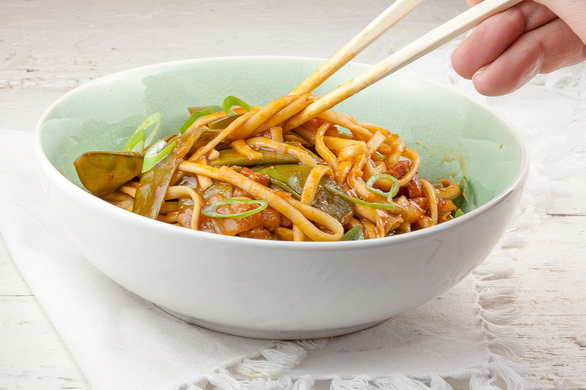

Kimchi Pasta

Description
This Korean-inspired pasta dish features kimchi, gochujang, and black bean paste for lots of flavor. You can substitute the squash for other vegetables. You can also use whatever type of kimchi you have on hand.
Ingredients
- 90g pasta
- 4g gochujang
- 4g black bean paste
- 25g kimchi
- 100g Chinese squash
- 1g sesame oil
- 6g salt
- mushroom seasoning
- MSG
- Chinkiang vinegar
- hot sauce
Steps
- Cook the pasta and squash
- Add the other ingredients
- Stir
- Transfer to dish